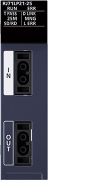
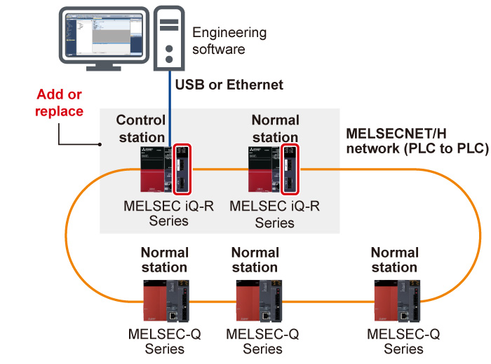
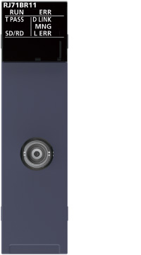
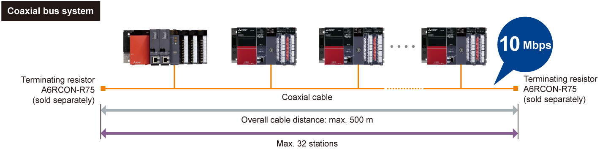

Controllers MELSEC iQ-R Series Product features -Network-

MELSECNET/H network module (Optical loop type)
This module supports the PLC to PLC network in a MELSECNET/H network*1.
- *1.Remote I/O network is not supported.

Easily utilize MELSEC-Q Series programs
- Easy addition
- Easy replacement
- MELSEC iQ-R Series modules can be added to the existing MELSECNET/H network consisting with MELSEC-Q Series modules
- A redundant system is also supported, allowing replacement of the existing MELSEC-Q Series redundant system
The module in the red box is the MELSECNET/H network module (RJ71LP21-25).

MELSECNET/H network module (Coaxial bus type)
Coaxial bus cables are less expensive than optical fiber cables, allowing system configuration at a low cost.

Easily utilize MELSEC-Q Series programs
- Easily added
- Easily replaced
- The MELSEC iQ-R Series modules can be added to the existing MELSECNET/H network consisting of the MELSEC-Q Series modules. Replacement is also possible

Specifications<sup>MELSECNET/H network module specifications</sup>
| Item | RJ71LP21-25 | RJ71BR11 |
|---|---|---|
| Compatible network | MELSECNET/H | MELSECNET/H |
| Communication speed (bps) | 25M/10M (MELSECNET/10 mode: 10M) | 10M |
| Maximum stations per network | 64 | 32 |
| Network topology | Duplex loop | Single bus |
| Connection cable | Optical fiber cable | Coaxial cable |
| Max. station-to-station distance (m) | 10 Mbps: 500 (SI optical fiber cable) 1000 (H-PCF/broadband H-PCF/QSI /broadband silica glass optical fiber cable) |
3C-2V: 300 5C-2V: 500 5C-FB, S-5C-FB: 500 |
| Overall cable distance (m) | 30000 | 3C-2V: 300 5C-2V: 500 5C-FB, S-5C-FB: 500 Can be extended up to 2.5 km with a repeater unit (A6BR10, A6BR10-DC) |
| Maximum link points per network | ||
| Link relay (LB) | 16384 points (MELSECNET/10 mode: 8192 points) | 16384 points (MELSECNET/10 mode: 8192 points) |
| Link register (LW) | 16384 points (MELSECNET/10 mode: 8192 points) | 16384 points (MELSECNET/10 mode: 8192 points) |
| Link input (LX), link output (LY) | 8192 points | 8192 points |